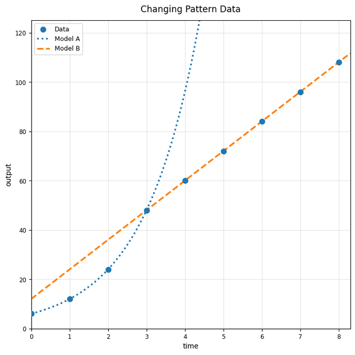

Practice Set 8.5.2
Match each equation card to a likely family card. The cards are intentionally not matched row-by-row.
Equation Cards
Family Cards
Which family is usually best for repeated multiplication by the same factor?
Use the graph and table. Decide which model family best fits the table and explain one piece of evidence.
| $x$ | 0 | 1 | 2 | 3 | 4 |
|---|---|---|---|---|---|
| $y$ | 4 | 7 | 10 | 13 | 16 |

Use the mixed comparison graph. Explain why a model that fits early values may still become unreasonable for larger inputs.

What does a residual of $-4$ mean in words?
Name one visual feature of a scatterplot that can help you choose a model family.
Would predicting time $12$ from data collected for times $0$ through $6$ be interpolation or extrapolation?
Use the changing pattern data. Describe how the trend changes after time $3$.

Use the changing pattern data. Explain why one model may not fit the entire data set equally well.
Use the table. Choose a model type and predict the value when $x=5$.
| $x$ | 0 | 1 | 2 | 3 | 4 |
|---|---|---|---|---|---|
| $y$ | 2 | 5 | 10 | 17 | 26 |
A model has residuals that are negative, then positive, then negative again in a clear pattern. Explain what this suggests about the model.
Explain how you would revise a model after discovering that it fits early data but misses later data badly.
Which parent function has a V-shape?
Identify the vertex of $y=|x+1|-6$.
Solve $|x-8|=5$.
Explain why $|x-a|$ can produce the same output for two different inputs.